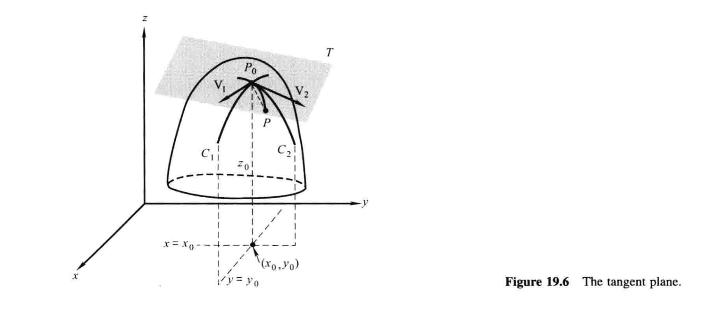
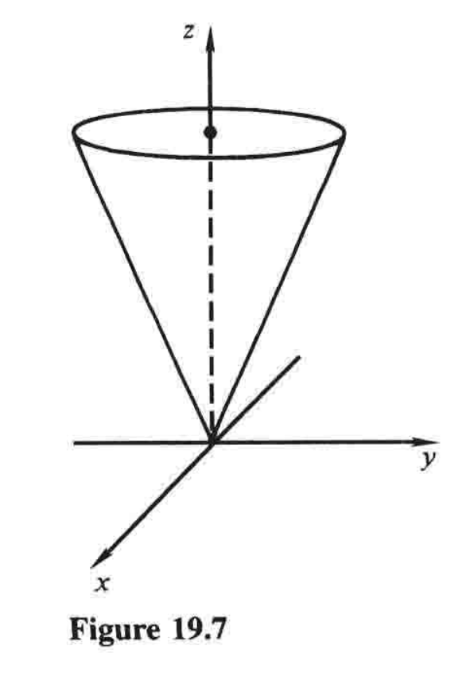

19.3 曲面的切平面¶
曲面的切平面的概念与曲线的切线的概念有关. 从几何上来说，所谓曲面在一点的切平面，是指在该点附近「最佳拟合」曲面的平面. 对我们来说，仔细思考这一点是很有必要的，因为正如我们将在19.5和19.6看到的那样，有些重要的实用结论依赖于它.
设想一个曲面\(z=f(x,y)\)，如图19.6. 就像我们在19.2节中指出的，平面\(y=y_0\)交此曲面于曲线\(C_1\)，其方程为
并且平面\(x=x_0\)交此曲面于曲线\(C_2\)，其方程为
同时，在点\(P_0(x_0,y_0,z_0)\)处，这些曲线的切线的斜率就是偏导数

这两条切线确定一个平面，而且如图19.6所示，如果这个曲面在\(P_0\)附近充分地光滑，那么这个平面就是曲面在\(P_0\)的切平面.
搞清楚我们所说的切平面是什么意思，是非常重要的，那么我们给出一个定义. 设想这样一种情况：\(P_0\)是曲面\(z=f(x,y)\)上一点，令\(T\)是过\(P_0\)的一个平面，并令\(P\)为这个曲面上任意的其他点1. 当\(P\)沿着曲面靠近\(P_0\)时，如果线段\(P_0P\)与平面\(T\)的夹角趋近于零，那么\(T\)就叫曲面在\(P_0\)处的切平面.
容易看到，曲面在点\(P_0\)处并不一定有切平面. 一个很简单的例子是半圆锥\(z=\sqrt{x^2+y^2}\)，如图19.7. 显然，在原点处没有平面与该曲面相切. 此时曲线\(C_1\)和\(C_2\)在原点处没有切线，并且偏导数\((1)\)在此处不存在. 然而，即便在\(P_0\)处曲线\(C_1\)和\(C_2\)足够光滑且有切线，曲面在\(P_0\)处也依然可能没有切平面，因为\(P_0\)附近的不光滑表现在\(C_1\)和\(C_2\)之间的区域. 在19.4节，我们探讨一个关键引理：如果偏导数\(f_x(x,y)\)和\(f_y(x,y)\)在\((x_0,y_0)\)的某邻域中所有点都存在，并且在\((x_0,y_0)\)本身处连续，那么这种情况就不会发生. 2

此时，我们设想切平面在\(P_0\)处存在，并开发一种方法来找出它的方程. 因为\(P_0=(x_0,y_0,z_0)\)位于这个切平面上，我们知道方程是这样的形式3：
其中\(\mathbf{N}=a\mathbf{i}+b\mathbf{j}+c\mathbf{k}\)是任意法向量. 只需找到\(\mathbf{N}\)，为此我们利用两向量\(\mathbf{V}_1\)和\(\mathbf{V}_2\)的叉积，它们是曲线\(C_1\)和\(C_2\)在\(P_0\)处的切线（如图19.6）. 为得到\(\mathbf{V}_1\)，我们利用这个事实，即沿着\(C_1\)的切线，在\(x\)方向的\(1\)单位增量导致\(z\)方向的\(f_x(x_0,y_0)\)的变化，同时\(y\)完全不变. 所以向量
就是\(P_0\)处\(C_1\)的切线. 同理，向量
就是\(P_0\)处\(C_2\)的切线. 因为\(\mathbf{V}_1\)和\(\mathbf{V}_2\)处于切平面上，现在我们能够得到我们的法向量\(\mathbf{N}\)，计算
（这个叉积中因子的顺序的选择只是为了方便，在结果中只产生一个负号而不是两个. 4）把\((3)\)的分量代入\((2)\)，我们看到所求方程为
或等价的
例1 找到曲面
在点\((3,2,3)\)处的切平面.
解 第一步应该检查这个点是否确实在曲面上，我们假设这一步已完成. 此时我们有\(f_x=2y^3-10x\)和\(f_y=6xy^2\)，所以\(f_x(3,2)=-14\)且\(f_y(3,2)=72\). 于是切平面的方程就是
当\(z\)并没有被显式地写成\(x\)和\(y\)的函数时5，曲面的切平面将会在19.5节讨论. 不过，通过将我们现有的方法应用于简单的例子，我们可以对预期情况有一个初步了解.
例2 找到球面
在点\((1,2,3)\)处的切平面.
解 尽管这个球面并不是\(z=f(x,y)\)的曲面的形式，它可以被看作是两个曲面结合而成——上下半球. 从\((5)\)中解出\(z\)，我们知道上半球由
给出，因此
这些方程给出
所以切平面的方程就是
或者
在这个例子中，我们从方程\((5)\)中显式解出\(z\)，然后和之前同样处理. 有一个替代方法通常更简单，那就是假定所给的方程隐式定义了\(x\)和\(y\)的函数\(z\)，然后通过隐式微分求出偏导数. 利用这个方法，我们利用方程\((4)\)但形式稍有区别：
系数写成这样，是因为\(\partial z/\partial x\)和\(\partial z/\partial y\)不一定只依赖于\(x\)和\(y\).
例3 为利用刚刚提到的方法找到例2中的切平面，我们首先将\(y\)固定，然后关于\(x\)隐式微分\((5)\)，便有6
因此\(\partial z/\partial x=-x/z\). 同理，\(\partial z/\partial y=-y/z\). 在点\(P_0=(1,2,3)\)，这些偏导数值为
所以由\((6)\)得切平面就是
跟之前一样. 当然，这种方法在曲面方程很难或不可能解出\(z\)的时候特别有用.
-
也就是\(P \neq P_0\). ——译注 ↩
-
换言之，在这种条件下，曲面在\((x_0,y_0)\)的切平面必存在. ——译注 ↩
-
平面的点法式. ——译注 ↩
-
若做成\(\mathbf{V}_1 \times \mathbf{V}_2\)，结果就是书中做法的反向向量，也是切平面的法向量，并无本质区别，只是外观不雅. ——译注 ↩
-
欲了解何谓「显式」，可以对比「隐式」. 通常来说，因为我们讨论的\(z\)是\(x\)和\(y\)的函数，从函数本来的意义上来说，其实就是从\(\mathbf{R^2}\)到\(\mathbf{R}\)的一个映射. 再通俗点来说，同时给定\(x\)和\(y\)，就能得到一个\(z\). 如果这个关系能通过一个\(z=f(x,y)\)的形式给出，那就是显函数. 如果不能，那就是隐函数. 比如\(\sin z=\cos x+\tan y\)，就是「隐式」的，因为给定\((x,y)\)后不能直接得到\(z\)，还得解\(z\)，而且有些时候还解不出来. 「隐」的意思就是「不明显」，很难写成\(z=f(x,y)\)这种我们喜欢的形式. 但是隐函数也是函数，有一些隐函数可以解出来，写成\(z=f(x,y)\)的形式. 哪些可解？感兴趣的读者请看后面的隐函数存在定理. ——译注 ↩
-
此处可看作\(\frac{\partial}{\partial x}(x^2+y^2+z^2)=\frac{\partial}{\partial x}(14)\)。注意我们之前已经有前提\(z=f(x,y)\)，所以复合函数求偏导（虽然此前没提），\(\partial z^2/\partial x=2z (\partial z/\partial x)\). ——译注 ↩